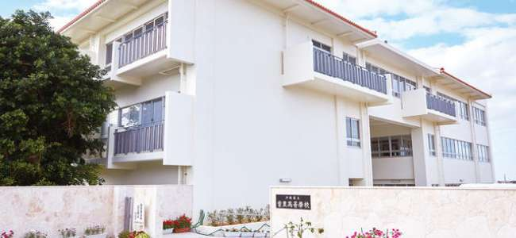

学校紹介
本校の概要
首里城と並んで那覇の街を見おろす首里の高台に建っている本校は、琉球国王尚温王が創立した国学（公学校と称していました）がその前身で、校門の奥に「国学発祥の地」の碑が建てられています。
尚温王の理念が、門閥を排し広く優秀な人材を登用することであり、そのことは「海邦養秀」という言葉の中に託されていて、今でも建学の精神として受け継がれ本校の教育方針の基盤をなしています。 その後明治13年(1880年)に首里中学校と改称され、県内最古の歴史をもつ伝統校として多くの優秀な人材を世に送り出しています。
現在は沖縄の伝統工芸である紅型や首里織などの後継者を育成する、染織デザイン科も併設されています。
学校長あいさつ
{kind=link}
本校は、世界遺産『琉球王国のグスク及び関連遺産群』の一つ首里城跡の麓に位置し、本県を代表する伝統校として輝かしい歴史を重ねてきました。
現在は普通科27学級、染織デザイン科3学級からなります。染織デザイン科は、沖縄の染織工芸の継承発展に取り組み、伝統校の特色ある学科として本校の活性化に大きく貢献しています。今も、1100名余の生徒達が、「海邦養秀」の崇高な建学の精神のもとで「文武両道」に勤しみ、生き生きとした高校生活を送っています。
今後とも、建学の精神「海邦養秀」のもとで、「時代を拓く、知性と品性を備えた逞しい人材」の育成をめざし教育活動を推進してまいります。
本校の魅力
生徒は、文武両道を合言葉に、勉学や部活動に、充実した高校生活を送っています。県代表として甲子園に初めて出場したのも、初の一勝を挙げたのも本校でした。学校行事や生徒会行事も活発かつ自主的に企画・運営しております。
さらに、ニューヨーク州にある姉妹校・オナイダ高校へ毎年１ケ月の日程で、10名の生徒を派遣する魅力的なプログラムもあります。
部活動は、数多くの文化系部と体育系部があります。県大会で優秀な成績を収めて県代表として、全国・九州大会に参加する部もあり、いずれの部活動も楽しく、活発に活動しています。また、本校は専用の野球場、テニスコート、弓道場を有しています。
進路としては在校生の95%以上が進学希望で、県内・県外の国公立・私立の大学へ多数進学しています。その中には、私立大学への指定推薦制度を利用して進学した卒業生も多数おります。
{kind=link}